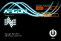
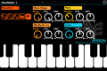
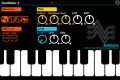
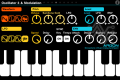
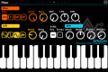
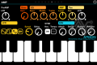
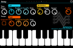
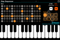
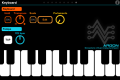
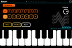

Argon is a monophonic virtual analog synthesizer for the iphone from icegear.
As the name suggests, the argon is monophonic (i.e. only one note can be played at a time) but has a slew sound mangling goodness at it’s disposal.
Below is a list of the key features.
High-quality 32bit floating point Synth-engine

Three Oscillator

• Osc1
◦ Modulatable Sawtooth waveforms Oscillator
◦ Modulatable Pulse width Oscillator
◦ Modulatable Oscillator to Triangle wave from Sine wave
◦ Modulatable Noise Oscillator
◦ Formant Oscillator
• Osc2,3
◦ Sawtooth waveform
◦ Square waveform
◦ Sine Waveform
◦ NoiseArgon monophonic synth
• FM (Frequency Modulation)
• AM (Amplitude Modulation)
• Oscillator Sync
• Oscillator modulation
◦ LFO, Envelope exclusive Oscillator
◦ Modulatable Pitch and Level using LFO, Envelope
◦ Modulatable FM depth using LFO, Envelope(Only Oscillator 1)
Filter

• Low Pass Filter (24dB/Oct)
• Low Pass Filter (12dB/Oct)
• Mid Pass Filter
• High Pass Filter
• Envelope, LFO exclusive for Filter
AMP

• Overdrive (saturator)
• 3 Band EQ
• Panpot
• Envelope, LFO exclusive for AMP
Three Envelope Generator (EG)
• Envelope Generator exclusive for each Osc, Filter, AMP
• ADSR (Attack-Decay-Sustain-Release)
Three LFO (Low Frequency Oscilator)
• Sawthooth Wave
• Square Wave
• Sine Wave
• Random waveforms by Sample, Hold
• Tempo-synced Speed
• KeySync Mode
• LFO Delay Parameter
Delay Effect

• Adjustable L,R Delay (0.1ms – 2000ms)
• TempoSync Mode
• Left and Right Feedback
• Cross-feed-back
• Color Parameter for controlling delay sound
• LFO for modulating delay time
• Spread Parameter(Modulating phase between left and right channels)
Step Sequencer

• 16 Step Sequencer
• 8 Pattern in 1 Tone
• Position-returning KeySync Mode
keyboard

• Three sized scrollable keyboard
• Key transpose
• Customized key scale
• Key Holding
• Note Portamento
Preset

512 user preset
64 factory preset
Argon is a fully realized synth with plenty of control over every aspect of your sound.
You access the various oscillators, filters, amp, effects through side scrolling the top half of the screen.
Exactly the same way you access the pages of apps on the iphone.
The octaves of the keyboard are accessed the same way, only the bottom of the screen scrolls.
The presets that come with it are delicious. Thick and warm, shiny and smooth dirty and noisy; and with the amount of control you have, you can completely destroy these and save them in one of 512 user patches and annoy your friends with synth noise for all occasions.
I really dig the formant oscillator, you can create some awesome vowel like sounds with it. Halloween soundtracks anyone?
The built in step sequencer is nice. It allows you to sequence a one bar pattern that can be saved to 8 different memory locations, effectively having eight variations. I personally like to bore my listeners stupid with monotonous music so i won’t be varying anything.
If you must, you can get some great squelchy sequences going; which are very reminiscent of the tb-303.
I found the sequencer a little small for fingers though. I think you should have the option to blow it up to full screen. It would make it a lot faster and accurate to program.
On the subject of finger size, one great feature of argon, is you can change the size of the scrolling keyboard. Small, medium, large. so if you have fingers like hotdogs, there’s a size for you!
As you can see from the screen shots, Argon is a beautiful looking app and the controls work extremely well. All the knobs and buttons are accurate to the touch so you don’t find yourself getting frustrated because you can’t hit the control you want.
They are very precise. I dare say Icegear spent some time getting this just right.
I like Argon a lot. Check out the video to get a better sense of how it all works.
And please let us know what you think. Does it deserve a place on your iphone or would you rather eat a toilet?
Darren


{kind=link}
{kind=link}
{kind=link}
{kind=link}
{kind=link}
{kind=link}
{kind=link}
{kind=link}
{kind=link}
{kind=link}
{kind=link}
{kind=link}
{kind=link}
{kind=link}